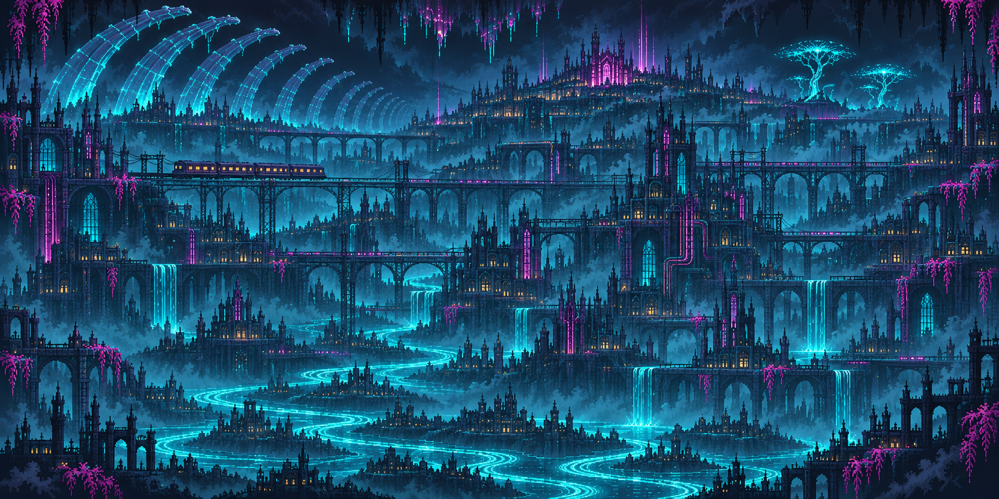
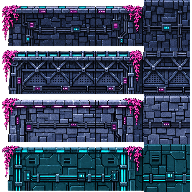
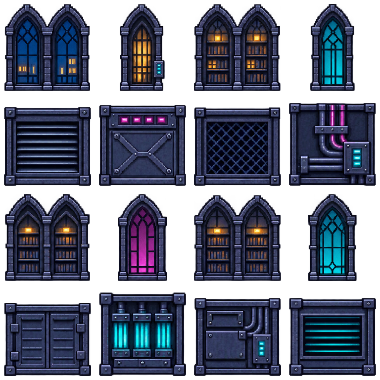
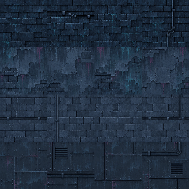
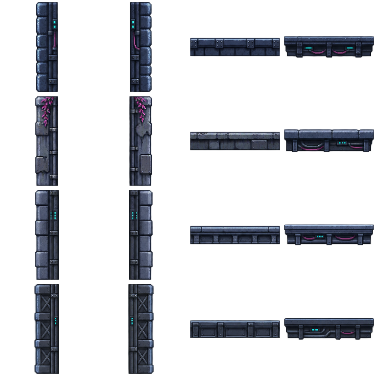
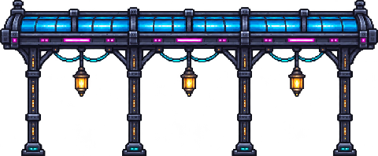
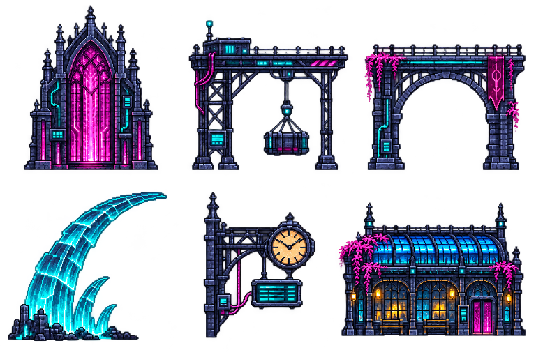
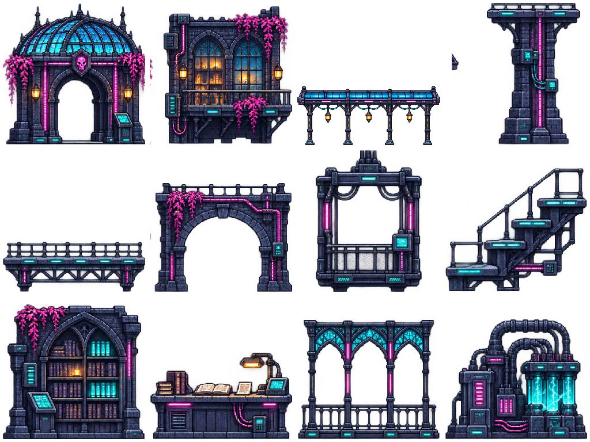
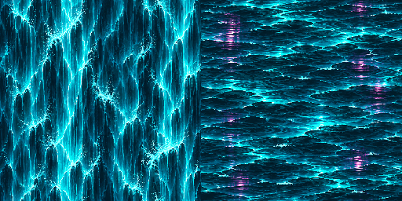

The Confluence · Environment kit
Cyberpunk with undead: dark electronic infrastructure, blue-glass station roofs, cyan spectral rivers, magenta power conduits and vegetation, and small warm lights of ordinary habitation. Based on the user’s Untitled.png reference.
City and spectral rivers

Solid terrain
Station stone · rail steel · Registry limestone · archive masonry. Four variants per row: left cap, top, right cap, interior.

Window and service inserts
Inset windows and service panels, with finished frames and no competing roof or balcony.

Continuous building materials · v5
Quiet station masonry, worn residential plaster, orderly Registry stone and industrial panels. Sparse windows sit over connected walls, with matching corners, rooflines and floor bands. Building layer notes · Exact prompts
Wall materials

Corners and bands

Front-facing station canopy
Finished end caps, grounded columns and a flat front elevation. Architecture lighting preserves solid surfaces; only distant spectral scenery is faded. Sweep notes · Exact prompts

Landmarks
Magenta Registry signal-glass · electronic freight gantry · wired viaduct arch · cyan mineral arc · station clock/display · inhabited windows.

Cyberundead architecture · v6
Twelve new modules for the rebuilt district: station entrance, inhabited balcony, canopy, retaining pier, bridge deck and arch, freight cage, maintenance stairs, Registry shelves, counter and gallery, and archive machinery. Exact generation prompt · Current district map


Textured waterways
Scrolling cascade and river materials, with reflections and broken foam.

Props and interaction sprites
Transparent exports. Decorative props add detail; the ledger, index, letter and shutter retain their existing interaction behavior.
This is the replacement cyberpunk art pass. The v1/v2 steampunk-leaning assets are preserved as historical iterations and are not loaded by this demo. The city uses parallax in both axes; the local scenery follows the level geometry. The river and distant railway structures are scenery. No new water, train or collision mechanics are implied.